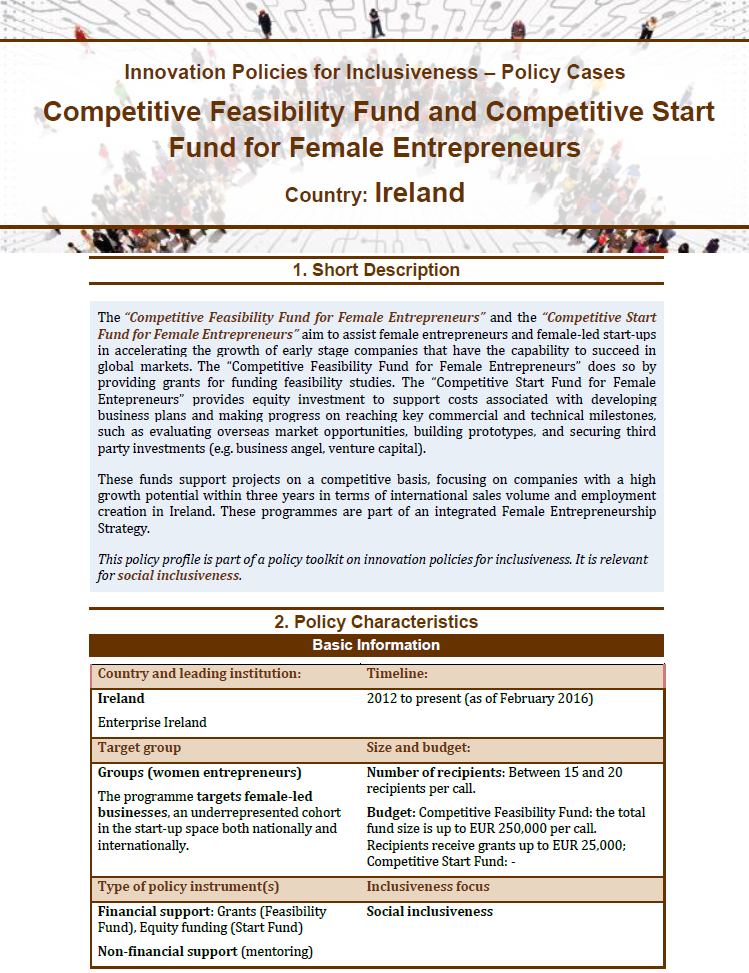

Providing incentives to invest in (inclusive) innovation
Less innovative SMEs and firms in traditional sectors might lack sufficient incentives or resources to invest in innovation, or to increase the participation of disadvantaged groups in their innovation activities. Instruments to increase those incentives include:

Grants are capital transfers from the government to the recipient with no repayment requirements. For instance, Israel’s Encouraging R&D in Traditional Industry Programme [1]incentivises firms in those industries to invest in research and development (R&D) projects through grants covering 50% of projects’ expenses (labour costs, equipment, acquisition of intellectual property, etc.). The Support Programmes for Companies from the Ultra-Orthodox and Arab Minority Communities, [2] also in Israel, incentivise companies that have at least 33% of their share capital held by an entrepreneur of a minority group or from the ultra-Orthodox community to engage in product development projects by providing grants covering 85% of the project’s budget (up to EUR 480 000). To promote female entrepreneurship, Ireland’s Competitive Feasibility Fund for Female Entrepreneurs [3] offers women-led early-stage companies with potential for success in global markets a grant to fund business feasibility studies, covering up to 50% of eligible expenditures. To avoid misuse of public resources, grant programmes frequently set precise conditions for their provision (e.g. conditions regarding the final use of the money, the requirement of private co-funding).
Israel’s Programme for Companies to Establish R&D Centres in the Periphery [4]promotes territorial inclusiveness by incentivising firms to locate innovation activities in less-developed regions. The programme requires large companies to repay the grants offered if commercial revenues are generated as a direct result of the R&D project supported, at a rate of 3% of the grant value per year on successful projects (smaller firms at a rate of 1.5% a year).

 [5] [5] |
2005-present Objective: Encourage traditional industries to invest in R&D, for the country to reach 80% of the labour productivity of traditional industries in the United States and cater to the local market. Target: Traditional industries (including mining, rubber and plastic, food, beverages and tobacco, textile, leather products, paper, wood products). Instrument: Grant of 50% from the approved budget for the R&D project and provision of professional counselling services. |
|
|
2014-present Objective: Encourage and support entrepreneurship by the ultra-Orthodox community and the Arab minorities. Target: Minority groups (ultra-Orthodox entrepreneurs and Arab entrepreneurs – including Druze, Bedouin and Circassians). Instrument: Grants covering 85% of the approved budget, up to NIS 2 million (EUR 478 000), notably for start-ups’ product development. |


 [8] [8] |
2012-2014 Objective: Assist female-led new start-up companies and female entrepreneurs in investigating the viability of innovative business propositions with a high potential for exporting. Target: Women entrepreneurs. Instrument: Grant for funding the proposed feasibility study, covering up to 50% of eligible expenditures with a maximum of EUR 25 000. |
|  [9] |
2010-present Objective: Encourage large companies to establish R&D centres in lagging regions in order to narrow the gap with Central Israel. Target: Large leading R&D-investing companies. Instrument: Grant covering 65-75% of the R&D expenses of R&D centres created in peripheral regions for 24 36 months. Larger companies are required to repay the grants at a rate of 3% of the grant value per year on successful projects (1.5% for smaller firms). |